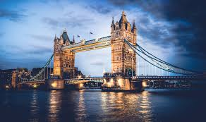
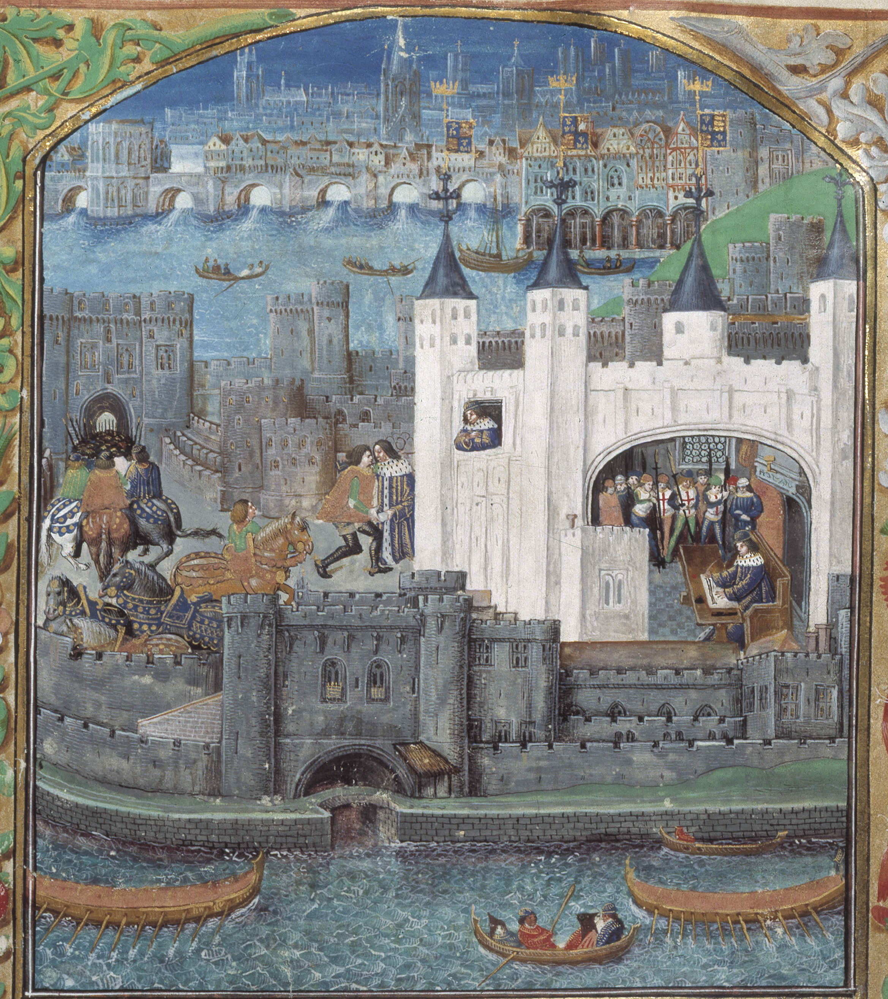

| Un peu d'histoire | Les incontournables | Stades | Se déplacer |
Londres a une histoire vieille de plus de deux mille ans. Durant cette période, la ville a connu plusieurs épidémies de peste, a été dévastée par les flammes, a fait face à des guerres civiles, a subi des bombardements aériens et des attaques terroristes. Malgré cela, elle a continué à se développer pour devenir une des capitales financières et culturelles les plus importantes du monde.
L'histoire de Londres commence lorsqu'elle est fondée par les Romains. Suite au retrait de ces derniers la ville est à l'agonie, mais elle renaît de ses cendres au VIème siècle avec l'arrivée des Saxons.
Au Moyen-Âge, Guillaume le Conquérant fonde un château près de la Tamise, château connu aujourd’hui comme étant la Tour de Londres. À l’époque, c’est un lieu de résidence de la famille royale, puis un lieu d’incarcération.Un peu plus tard, au cours du XIIIème siècle, la ville prend une importance considérable dans la lutte de pouvoir qui oppose Richard 1er à son frère Jean sans Terre.
Le règne des Tudor est une période à double tranchant pour Londres. La conversion de Henry VIII au protestantisme entraîne la réaffectation de nombreux monastères et la perte de quantités d’ouvrages littéraires, mais également d’hôpitaux.
L’époque des Stuart apporte son lot de désolations. Deux grands fléaux touchent Londres : la peste frappe la première en 1565. Elle est stoppée net par un incendie qui ravage une grande partie de la ville.
Londres se développe de plus en plus. La sécurité s’améliore avec le pavage et l’éclairage des rues, la Tamise est dotée de plusieurs ponts. Le XIXème siècle et la Révolution Industrielle attirent de nombreux paysans venus faire fortune. Au XXème siècle, enfin, la capitale britannique est pilée de bombes allemandes et subit quotidiennement les affres du Blitz, qui fait d’énormes dommages. Au vu de son histoire, Londres montre qu’elle a toujours su résister aux périodes de crises.
 